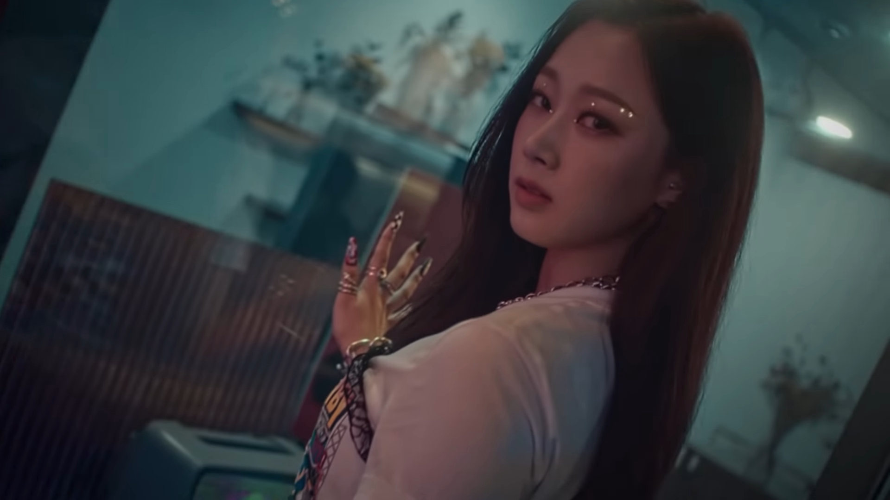

GISELLE (지젤)
Uchinaga Eri (Japanese: 内永 枝利うちなが えり), also known by her stage name Giselle (Korean: 지젤), is a Japanese-Korean member of the South Korean girl group aespa.
CAREER
2020: AESPA DEBUT
On October 28, 2020, during a press conference, a video showing the final lineup of Aespa revealed Giselle to be a member.
She was officially revealed as a member of aespa on October 30.
Æ COUNTERPART
Æ-Giselle
æ-Giselle (stylized as æ-giselle or æ-GISELLE) is a virtual member of aespa. She is the virtual counterpart to Giselle. She was revealed on November 6, 2020 during the SYNK, GISELLE video.
TRIVIA
⁍ Education:
⁍Tokyo International School (Transferred)
⁍International School of the Sacred Heart (Graduated)
⁍Special Ability: imitating people
⁍She was a Kanto-provincial level high jumper and 200m runner in 2017.
⁍Nickname: Gigi, Aeri
⁍Favorite Words: words that have strong diction: tom yum kung (Thai soup),
Papico (name of ice cream), jjukkumi (baby octopus)
⁍Favorite Color: black
⁍Favorite Season: fall
⁍Favorite Animal: puppy/dog
⁍Favorite Food: anything sweet and salty
⁍Favorite Movie: Deadpool.
⁍She is also into Emo things
⁍Karina said that Giselle can't fry eggs.
⁍First impression of members:
⁍Karina: "woah...she's tall ㅎㅎ in the dressing room we were both shyㅎ"
⁍Winter: "I thought Winter was demure and quiet....... but she isn’t"
⁍Ningning: super nice and pretty.
⁍Her favorite weather is when it's cloudy but not raining. A bit chilly.
⁍If she had to describe herself in one word it would be Jjing Jjing Yi (whines).
⁍She loves taking photos of people especially her members.
⁍When's she's stressed she likes to go shopping and eating sweet foods.
⁍Her life motto is "Everything happens for a reason.
⁍She was the fourth and final member to be revealed.
⁍Giselle got casted through SM's Saturday Open Auditions.
She is now one of eight idols who have debuted that were able to pass the Saturday Open Auditions.
⁍She can play the guitar.
⁍Her father is Japanese, and her mother is South Korean,
making her ethnically half-Japanese and half-Korean.
⁍She is fluent in Korean, Japanese, and English. However, she requests Japanese fans to only write to her in
Hiragana and Katakana as she cannot read Kanji, or Chinese characters.
⁍She can also speak pre-intermediate-level French and Spanish.
⁍She was an alto in a choir for four years.
⁍She said that she likes BIGBANG, SNSD, CL & Stevie Wonder
⁍Her role model is Ariana Grande, and she has seen her concerts a few times in Japan.
⁍Her aunt is Johee Cho, ABC News' Seoul bureau chief and reporter covering the Korean peninsula.
⁍She trained in a normal academy for 2 months and trained in SM Entertainment for 1 year. This
makes her the female idol under SM Entertainment with the shortest trainee period.
Also according to the choreographer, they have been practicing and preparing for 11 months since the beginning of 2020,
which means as soon as she got into the company, she joined the debut group.
⁍Her rapping skills were first introduced in SYNK, GISELLE.
⁍When talking about Christmas songs, she said she really liked NCT U's song "Coming Home".
⁍Giselle and Winter call themselves the "Dumb And Dumber Duo".
⁍Her lover is MY.
⁍Her perfume that she loves and keeps in her bag is Jo Malone's Peony & Blush Suede
⁍he can draw people's eyebrows at speed.
⁍Her bag is full of medicine and supplements.
⁍She said in interview with Allure that she do a lot of songwriting and when she listens to good songs
there's a spark that made her "want to making the melody and get the lyrics right".
VIDEO
aespa 에스파 - SYNK, GISELLE 
Personal Information
Birthname: Uchinaga Eri (内永 枝利うちながえり) (Japanese)
Kim Aeri (김애리) (Korean)
Birthplace: Garosu-gil, Seoul, South Korea
Birthdate: October 30, 2000 (age 21)
Height: 164 cm
Weight: N/A
Blood Type: O
Zodiac Sign: ♑ Capricorn
Nationality: Korean
Occupation: Singer, Dancer
Occupational Information
Position: Main Rapper, Vocalist
Avatar: æ-GISELLE
Signature:
Symbol: Moon 🌙
Ability: Xenoglossy
Active: 2020–present
Agency: S.M. Entertainment (2019-present)
Associated acts: AESPA
General Information
Active: 2020-Present
Agency: S.M. Entertainment
Associated Acts: aespa, Giselle
Physical Description
Species: Avatar
Gender: Female
Eye Color: Hazel
Hair Color: Blonde